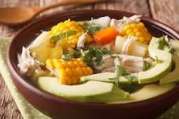

Ajiaco

ingredientes
- 8 tazas de agua
- 4pechugas medianas de pollo, sin piel y sin hueso
- 1taza de guascas secas (Colombian plant)
- 2lbs de papa criolla (yukon gold)
- 2lbs de papa sabanera (white potatoes)
- 1cebolla mediana picada
- 2dientes de ajo picados
- 4mazorcas grandes de maíz
- 1cubo de caldo de gallina (pollo)
- 1/2taza de arvejas o chícharos verdes (peas)
- Sal al gusto
Pasos
- Mezcla los ingredientes
- Desmecha el pollo
- ¡Disfruta!
regresar